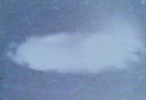
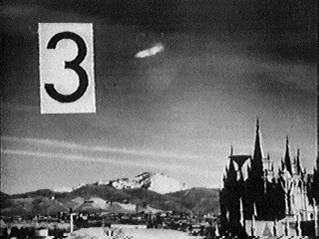

Photographie du 8 à Salt Lake City
Observation (ci-contre) à Salt Lake City (USA).
Lancement de la sonde Pionner 10 vers Jupiter, puis vers les étoiles. Elle emporte une
plaque gravée, un message codé pour d'éventuelles civilisations extraterrestres.
Le pilote et le copilote d'un avion de la petite compagnie privée américaine Newstar lancent un
appel de détresse : Ici, Fox-trot, Bravo, Yankee 17 de la Newstar... Mayday !... Demande assistance en urgence...
Suis perdu au nord de l'archipel des Bahamas. Compas déréglé, toute navigation rendue impossible... Réclame
position par gonio... Le pilote est entré dans une zone de brouillard dense, de couleur jaunâtre, l'empêchant
de faire tout repérage. Il ne voyait rien, alors que, même à vue d'œil, personne n'avait connaissance d'une
perturbation dans cette zone. Puis, il semble que le pilote ait aperçu quelque chose et les liaisons radio sont
définitivement interrompues.
Le CNES fait le 2ème lancement de la
fusée Tibère.
Un phénomène lumineux est observé de France, Suisse et Italie. Une veillée nocturne du Résufo, organisée ce soir-là, permet d'en
collecter 36 photographies différentes LDLN.
À Drocourt (Pas-de-Calais) un couple rentre à pied d'un spectacle
quand ils observent une boule rouge de 1m50 de diamètre à basse altitude, ils préviennent alors d'autres
personnes et tout le monde admire le spectacle. L'objet parcourt par saccade la ligne de chemin de fer. Tout
d'abord l'objet est immobile oscillant légèrement de gauche à droite et de bas en haut. Puis, brusquement il
prend un départ fulgurant pour aller sur un autre point puis disparait un quart d'heure. Réapparait recommence.
L'objet revient toujours avec le même manège à son point de départ, puis vient vers le milieu d'un champ et
disparait brusquement Ovni, Premier dossier complet... par Figuet M./ Ruchon J.L. ** éd. Alain Lefeuvre 1979.
À Pont de Cheruy Edouard Sessière et son fils Christian (17
ans), en voiture, sont soudain éblouis à proximité de la maison "Cantamin" au quartier du Brochet. La lumière
provient d'un objet stabilisé à 35 m de haut. La lumière est tellement éblouissante que M. Sessière doit
s'arrêter net. Elle ressemble à un arc électrique comme reflétée par des miroirs tournants. L'objet ne paraît
pas métallique, son diamètre peut être de 10 m. Au bout de 2 mn il pivote en position horizontale, démarre,
s'arrête 100 m plus loin pour reprendre sa position verticale et disparaître à grande vitesse en décrivant un
"S" jaune-rose-rouge en direction de Charvieu. Le "S" disparaît au bout d'un quart d'heure. Effets physiques sur
la montre et sur la voiture M. Figuet/ J.L. Ruchon: "Ovni, Premier dossier complet..." éd. Alain Lefeuvre 1979, p. 378.
"crash" ou "boule de feu" ayant laissé sur le flanc nord de la montagne du Trainon, à 2 km du rocher du
Dromon, site de Théopolis, des tôles d'un satellite Cosmos soviétique en perdition au-dessus de la
ProvenceJean-Luc Chaumeil, Le temps et les OVNI, p. 53.
Sur Antenne 2, numéro "Les visiteurs de l'espace" de l'émission 24
heures sur la 2"Emissions françaises récentes sur les soucoupes volantes", Phénomènes Spatiaux n° 31, mars 1972, p. 2.
{kind=link}